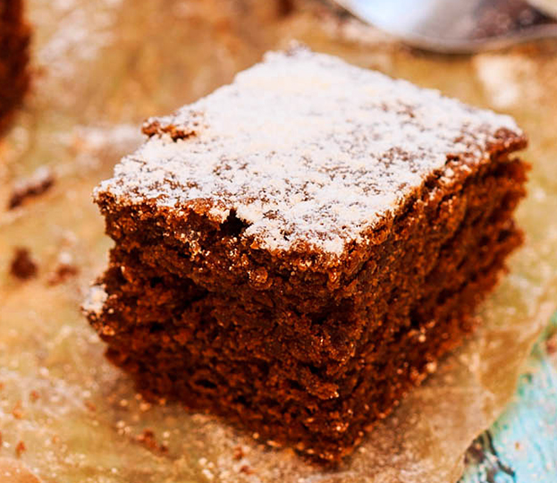
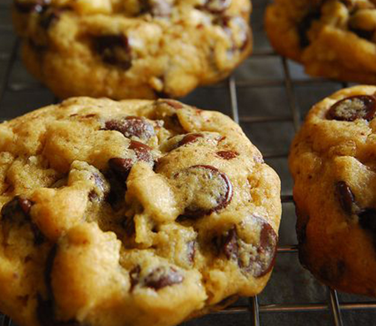
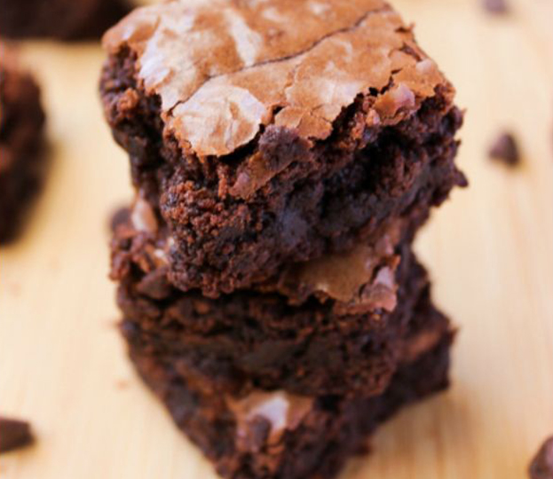
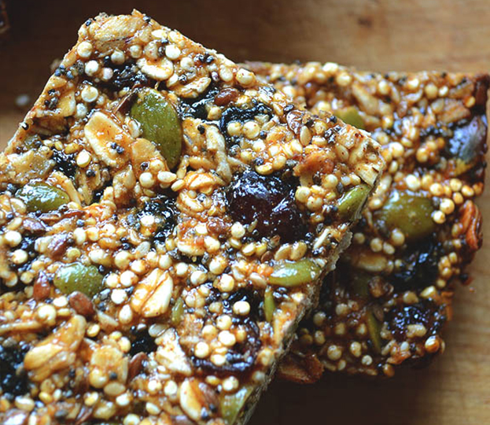
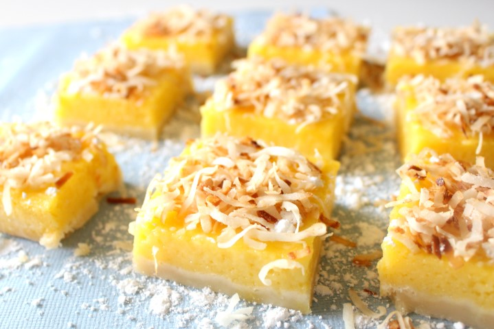
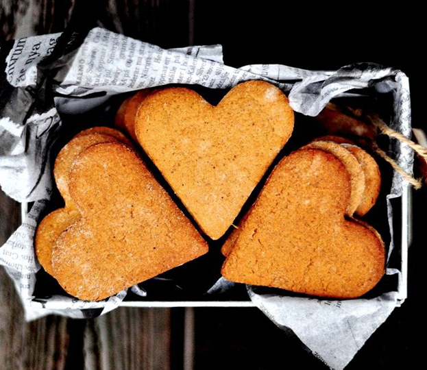
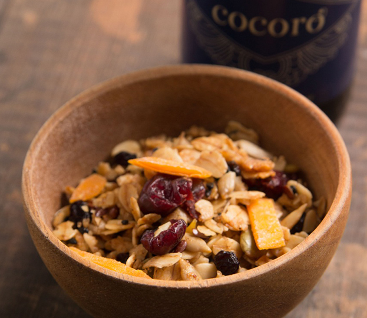
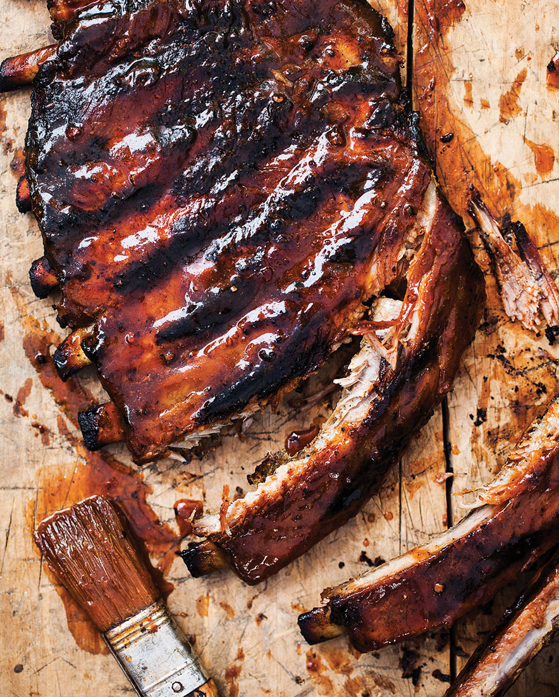

Cocoro Organic Coconut Sugar tastes just as beautiful as it sounds. It is unrefined, organically grown and sustainably farmed on the Indonesian island of Java. Harvested using traditional methods, it retains the nutrients naturally found in the nectar of the coconut blossom, including calcium and iron.
With a unique depth of flavor and subtle caramel and butterscotch notes, it can used to replace brown Sugar or Muscovado (Dark Cane Sugar) in baking, adding depth of flavor and warm color.
Perfect for:
Sprinkling on porridge, adding a delicious toffee flavor
Baking such as carrot cakes, brownies, and biscuits
Sweetening tea, coffee, and cold drinks
Sprinkling over natural yogurt or fruit
Available in selected supermarkets nationwide.
Sticky Jamaican Gingerbread

Sticky Jamaican Gingerbread
Ingredients:
115g – Butter, diced
225g – Flour
1 tsp – Baking Soda
1 Tbsp – Ground Ginger
1 tsp – Ground Cinnamon
1 tsp – Nutmeg
130g – Dark Caramel Cocoro
275ml – Full Cream Milk
115g – Molasses
115g – Golden Syrup
1 large – Egg
Instructions:
Pre-heat oven to 350°F (177°C).
Sift the flour, baking soda, ground cinnamon together. Add ground nutmeg and ground ginger.
Mix the diced butter into the flour mix.
Lightly heat the molasses and golden syrup together in a small pan and set aside.
Dissolve the Dark Caramel Cocoro sugar into the milk. Then add this to the flour mixture. Followed by the molasses and golden syrup mixture, and the egg.
Pour the thick batter into a lined baking pan or a silicon baking mold and place inside the pre-heated oven.
Bake for about 45 minutes or until a toothpick inserted into the center comes out clean.
Loosen the loaf from the sides of the pan with a knife and allow to cool a little before completely turning out. Once cool, wrap the loaf in foil. The loaf becomes stickier and more moist.
Oatmeal Chocolate Chip Cookies

Oatmeal Chocolate Chip Cookies
Ingredients:
1 cup – butter
2 cups – flour
1 tsp – baking soda
1 cup – Ivory Cocoro light coco sugar
1 cup – Cocoro dark coco sugar
21/2 cups – oatmeal
12 oz – semi sweet chocolate chips
1/2 tsp – fine salt
1 cup – finely chopped semi sweet chocolate bar
2 large – eggs
1 tsp – baking powder
1 tsp – vanilla extract
Instructions:
Cream the butter with the Cocoro light and dark coco sugar.
Add vanilla extract and eggs.
Add the flour, salt, baking powder, baking soda and oatmeal.
Add semi-sweet chocolate chips and chopped chocolate bar.
Drop into 1-inch balls, about 2 inches apart on the baking sheet.
Bake at 375°F (190°C) for about 8-10 minutes.
Cocoro Brownies

Cocoro Brownies
Ingredients:
125g – Salted Butter
250g – Bittersweet Chocolate, coarsely chopped
4 large – Eggs
250g – Ivory Cocoro
100g – Dark Caramel Cocoro
2 ts – Vanilla Extract
150g – All Purpose Flour
250g – Semi-sweet chocolate chips
Instructions:
Preheat the oven to 350°F (177°C). Butter and flour a 9×13 inch baking pan or use a silicon baking mold.
Place the butter and bittersweet chocolate in a double boiler and stir until melted and thoroughly blended. Remove from heat and set aside to cool.
Beat together the eggs, and Cocoro light and dark coco sugars at high speed, until creamy.
With the mixer at a lower speed, add the flour, chocolate chips and vanilla extract.
Pour batter into the baking pan and bake for 25-30 minutes. A toothpick inserted into the center should come out very slightly gooey. Allow the brownies to cool for about 30 minutes to an hour before cutting. For a more solid texture, you can let the slab chill in the refrigerator for about 30 minutes before cutting.
Quinoa Energy Bars

Quinoa Energy Bars
Ingredients:
2 cups – Quinoa, cooked and cooled
1/2 cup – Natural Almond Butter
1 large – Banana, peeled and mashed
2 – Dates, pitted
1 Tbsp – Cocoa Powder
2 Tbsp – Coco Honey
1/4 cup – Semi-sweet Chocolate Chips
2 Tbsp – Chia Seeds
2 Tbsp – Dessicated Coconut
3/4 cup – Dark Chocolate, melted —Optional
Instructions:
In a food processor, blend the almond butter, banana, dates, cocoa powder and coco honey together.
Mix in the quinoa, chocolate chips and chia seeds.
Line a baking dish with parchment paper or plastic wrap and pour the mixture in. Spread evenly.
Allow to freeze for about 2 hours.
Remove from freezer and cut into bars.
Store in freezer until ready to eat.
Dip the bars in dark chocolate and allow chocolate to re-solidify. —Optional
Coconut Mango Bars

Coconut Mango Bars
Ingredients:
2 cups – Organic Dessiccated Coconut
3/4 cup – Oatbran
3/4 cup – Coconut Honey
1 1/4 cup – Dried Mango
Instructions:
Preheat oven to 325°F (163°C).
Mix all ingredients together evenly. Press into a silicone brownie pan or silicone chocolate bar mould.
Bake for 10-15 minutes or until lightly toasted.
Take out of mould, allow to cool, and set.
Traditional Pepparkakor

Traditional Pepparkakor
Ingredients:
1 cup – Butter
1 cup – Ivory Cocoro
3/4 cup – Dark Caramel Cocoro
1 large – Egg
1 Tbsp – Molasses
3 3/4 cup – Flour
2 tsp – Baking Soda
1 tsp – Cinnamon
1 tsp – Nutmeg
2 tsp – Ground Ginger
1 tsp – Vanilla Extract
Instructions:
Sift together the flour, baking soda, cinnamon, nutmeg and ground ginger.
Beat the butter together with the Cocoro Ivory and Dark Caramel coco sugars in a mixing bowl until light and fluffy. Mix in the egg, vanilla and molasses until smooth.
Gradually stir in the flour mixture until evenly blended. Divide the dough into 4 equal portions and wrap tightly each with plastic wrap. Refrigerate for at least 1 hour, or overnight.
Preheat oven to 375°F (190°C). Lightly grease baking sheets.
Using 1 portion at a time, work on a floured surface and roll out dough to 1/8 inch thick. Cut into shapes with cookie cutter, and place 1 inch apart on prepared baking sheets.
Bake in preheated oven until set, about 5 minutes. Cool completely. Store in airtight containers.
Forest Berry Granola

Forest Berry Granola
Ingredients:
3 cups – rolled oats
1 cup – slivered almonds
1/2 cup - pumpkin seeds
3/4 cup - shredded coconut
1/3 cup - Ivory Cocoro
1/3 cup - Coconut Nectar
1/4 cup - Virgin Coconut Oil
3/4 tsp - fine salt
1 cup – dried blueberries
1 cup – dried cranberries
1 cup – dried mangoes
Instructions:
Preheat oven to 250°F (120°C)
In a large bowl, combine rolled oats, pumpkin seeds, almonds, coconut and Ivory Cocoro.
In a separate bowl, combine coconut nectar, Virgin Coconut Oil, and salt.
Combine both mixtures and transfer to 2 baking sheet pans. Bake for 1 hour and 15 minutes, stirring every 15 minutes to achieve an even color.
Remove from oven, add dried blueberries, cranberries, and dried mangoes, mixing until evenly distributed.
Whiskey Ribs

Whiskey Ribs
BBQ Sauce:
1 head garlic
1 tablespoon olive oil
1/2 cup water
1 cup pineapple juice
1 heaping tablespoon crushed pineapple
3 tablespoons lemon juice
1/4 cup teriyaki sauce
1 tablespoon soy sauce
11/3 cups Dark Caramel Cocoro
1/4 cup finely minced white onion
2 tablespoon’s whiskey
1/4 teaspoon cayenne pepper
BBQ Rub:
11/2 teaspoons paprika
1/2 teaspoon salt
1/4 teaspoon dried thyme
1/2 teaspoon ground black pepper
1/2 teaspoon garlic powder
1/2 teaspoon onion powder
1/4 teaspoon ground cayenne pepper
2 racks baby back ribs
Instructions:
Preheat oven to 300°F (150°C).
Cut 1/2-inch off of the head of garlic. Remove the outer layers of papery skin. Put the garlic in a small ramekin and drizzle with the olive oil. Cover with foil and bake 1 hour. Let cool.
Mix all spices for rub together. Rub mixture on ribs. Place ribs on a baking tray and place in oven for 21/2 hours.
Next, make the sauce. In a medium saucepan, combine the water, pineapple juice, teriyaki sauce, soy sauce, and Dark Caramel Cocoro. Bring to a boil, stirring occasionally. Reduce heat to bring it down to a simmer.
Squeeze 2 teaspoons of garlic out of the head of roasted garlic and add to the saucepan.
Add the lemon juice, onion, whiskey, crushed pineapple, and cayenne pepper.
Let sauce simmer for 30 to 40 minutes, or until reduced by half. Yield is 1 cup.
Preheat grill or grill pan to high heat. Grill ribs for 3 to 4 minutes per side and then baste with sauce and serve.
Quality Assurance
Understanding the strict requirements of the global community for food safety, we partner with more established facilities who have the expertise and infrastructure to process with consistency and high quality.
Find a Store Near You!
Available in Landmark Makati, Citysuper Trinoma, Robinsons Supermarkets, Unimart, Makati Supermart (Alabang), Earth Kitchen, Pops Candy Store, Duty Free and Gourdo’s, Cocoro Natural Sugar is a healthy and sustainable sweetener made from coconut plantations in CDO and Davao.